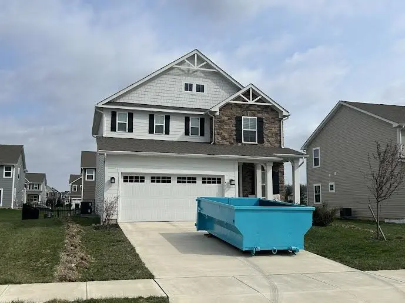

Complete Guide to Dumpster Rental in Powell, Ohio (2026)
Whether you're rehabbing a property on the Sawmill corridor, cleaning up after water or fire damage, or tackling a renovation in Summit View or Liberty Township, this guide covers everything Powell residents need to know about renting a dumpster.

Powell, Ohio has grown into one of Delaware County's most active real estate markets — and that growth comes with serious waste management demands. From new construction debris along the Sawmill Parkway corridor to gut-renovation projects in Summit View, and from estate cleanouts in Liberty Township to urgent flood and fire damage debris removal, dumpster rental in Powell covers a wider range of project types than almost any other area we serve. This guide walks you through everything you need to know to get the right dumpster, at the right price, delivered to the right place.
Why Powell Homeowners and Rehabbers Choose Dumpster Rentals
Powell attracts a steady stream of rehabbers — investors and homeowners who buy older properties, gut them, and bring them back to life. The 43065 ZIP code also sees more than its share of flood and fire damage restoration work, both due to its creek drainage patterns and the age of certain neighborhoods. These projects share one thing in common: they generate enormous volumes of debris that can't wait.
A dumpster rental is the practical choice because:
- Speed: Rehabbers and restoration crews can't afford to stop and haul every day — having a dumpster on-site keeps the project moving
- Volume: Fire and flood damage often means stripping a home down to the studs; that's multiple truckloads of drywall, insulation, flooring, and framing
- Safety: Debris piles on restoration sites are a liability — a dumpster consolidates material and keeps the work area clear
- Cost: One flat-rate dumpster rental beats multiple hauling trips by a wide margin for any significant cleanout
Fire & Flood Damage? Call First.
Damage restoration debris is some of the heaviest material we handle — wet drywall, soaked insulation, and charred framing add up fast. If you're dealing with a damage restoration project, call us at (614) 636-2343 before booking online so we can make sure you get the right size for the volume and weight involved.
Dumpster Sizes for Powell Projects
Matching the right size to your project avoids overpaying for capacity you don't need — or worse, running out of space mid-project. Here's how the sizes break down for typical Powell jobs:
10-Yard Dumpster
Our smallest option is ideal for smaller, focused jobs: a single-room cleanout, minor deck removal, or a bathroom renovation with limited debris. The 10-yard dumpster is $289, including 3 days of rental and up to 4,000 lbs of debris.
14-Yard Dumpster (Available Now — Most Popular)
The 14-yard dumpster is the right call for the majority of Powell residential and rehab projects. At approximately 14 feet long, 8 feet wide, and 4 feet tall, it holds around 4,000 pounds of debris and fits in a standard driveway.
Perfect for Powell's most common projects:
- Rehab gut-outs: drywall, flooring, cabinets, fixtures
- Flood damage cleanup — removing wet materials from one or two rooms
- Fire damage restoration on smaller affected areas
- Kitchen or bathroom renovations
- Garage or basement cleanouts
- Roofing tear-offs up to approximately 1,500 sq ft
- Estate cleanouts in Liberty Township and Summit View
Pricing: $319 for 14-yard, includes 3 days of rental and up to 4,000 lbs of debris. Additional days are $15 each.
20-Yard Dumpster
For large-scale rehabs, whole-home gut renovations, or extensive flood and fire damage affecting multiple rooms or floors, the 20-yard is the right tool. Book the 20-yard for $389, including 3 days of rental and up to 4,000 lbs of debris.
Rehab Projects: Size Up When in Doubt
Rehabbers consistently underestimate how much debris a full gut generates. Drywall, insulation, and old flooring are bulky even before they get heavy. If you're gutting more than two rooms, or stripping a house down to the studs, plan for the 20-yard— or call us and we'll advise based on the scope. A second dumpster mid-project always costs more than getting the right one upfront.
Powell Permit Requirements: What You Need to Know
Powell straddles incorporated city limits and unincorporated Liberty Township, so permit requirements depend on exactly where your property is. Here's the straightforward breakdown:
When You DON'T Need a Permit in Powell
- The dumpster is placed entirely on your private property (driveway or yard)
- It doesn't block a public sidewalk or street
- It's not within a public right-of-way
When You DO Need a Permit
- Street or curb placement is required because your driveway can't accommodate the dumpster
- The dumpster will partially obstruct a sidewalk
- You're on an active new construction site requiring a site permit
For incorporated Powell addresses, contact the Powell Building Department for street placement permits. For Liberty Township addresses, contact Delaware County. If you're not sure which jurisdiction your property falls under, we can help you figure it out — it comes up often with properties near the Seldom Seen Road and Home Road corridors.
For more detail on Ohio dumpster permits by city, see our Ohio Dumpster Permit Guide.
Dumpster Placement in Powell Neighborhoods
The right placement protects your driveway and keeps the project running smoothly. A few Powell-specific considerations:
Sawmill Parkway Corridor
Properties along Sawmill and the surrounding corridors often have tighter lot setbacks and heavy traffic nearby. We schedule Sawmill deliveries to avoid peak commute hours, and our drivers are familiar with routing on Home Road and Liberty Road. Make sure your driveway is clear of vehicles and that overhead clearance is at least 23 feet — garage overhangs and mature trees are the most common obstacles on these properties.
Summit View
Summit View properties tend to have longer driveways with good access, making dumpster placement straightforward. If you're doing a renovation and want the dumpster closest to a side door or garage entrance, let us know at booking and we'll position it to minimize your carry distance.
Liberty Township
Liberty Township addresses are outside the city limits, which means slightly different permit rules (see above) but no change in our service, pricing, or delivery scheduling. We deliver throughout unincorporated Liberty Township the same day as Powell proper.
Protecting Your Driveway
We place protective boards under the dumpster at no extra charge. For properties with stamped concrete, pavers, or heated driveways, let us know at booking — we'll take extra care with placement and may recommend boards in multiple positions depending on the slope.
What You Can (and Can't) Put in a Powell Dumpster
Acceptable Materials
- Drywall and plaster (flood/fire debris)
- Insulation (non-asbestos)
- Lumber, framing, and wood debris
- Flooring — hardwood, carpet, tile, vinyl
- Roofing shingles and underlayment
- Cabinets, countertops, and fixtures
- General household junk and furniture
- Concrete and brick (weight limits apply — call ahead)
- Yard waste and landscaping debris
Prohibited Items
The following cannot go in any dumpster: hazardous waste, paint, chemicals, automotive fluids, batteries, tires, propane tanks, asbestos, medical waste, and electronics with cathode ray tubes. For hazardous disposal options, visit SWACO's website for Delaware/Franklin County collection events.
Note for fire damage debris: If fire suppression materials (foam or chemical retardant) are present in the debris, call us before loading. Certain suppression residues require special handling.
Pricing and Rental Terms
No hidden fees — this is what you pay for a dumpster rental in Powell:
- Base price: $319
- Rental period: 3 days included
- Weight allowance: 4,000 lbs included
- Delivery and pickup: Included
- Extra days: $15 per day
- Weight overage: $0.03 per pound over 4,000 lbs
We don't charge environmental fees, fuel surcharges, administrative fees, or drop-off fees. Book online and you'll see the exact total before you confirm.
For a full breakdown of what drives dumpster rental pricing in Central Ohio, see our guide on transparent dumpster rental pricing.
Common Powell Dumpster Rental Projects
Flood Damage Cleanup
Flooding in Powell — whether from storm drainage, creek overflow, or a plumbing failure — typically means stripping out wet drywall, soaked insulation, ruined flooring, and damaged cabinetry. Time matters: the faster the wet material is out, the lower the mold risk. We offer same-day delivery specifically for damage restoration situations — call us and we'll prioritize your delivery.
Fire Damage Restoration
Fire debris includes charred framing, smoke-damaged drywall, melted fixtures, and water-damaged material from suppression efforts. It's heavy, irregular, and needs to move fast. Our 14-yard handles most single-room and partial-floor fire jobs cleanly; for whole-structure losses, we'll walk you through a plan for multiple pulls or will have the 20-yard available once it launches.
Rehab and House Flips
Powell's older neighborhoods near Historic Powell and the Liberty Street corridor are prime rehab territory. A full gut — demo of kitchens, baths, flooring, and sometimes walls — typically fills a 14-yard or more. Rehabbers working on a tight schedule appreciate our extended rental option ($15/day) over the base 3-day window, which rarely fits a full demo timeline. See also our guide on dumpster rental strategy for house flips.
New Construction Waste
Powell leads Delaware County in residential building permits. We work with builders and their subs on active development sites throughout the 43065 ZIP code — coordinating with site managers on placement, scheduling swap-outs, and keeping debris consolidated so inspections aren't delayed.
Seasonal Cleanouts and Estate Work
Liberty Township's larger lots and older homes generate significant cleanout volume when families downsize or settle estates. A 3-day rental gives most families enough time to sort through a house at a reasonable pace without rushing decisions.
Why Choose Streamline Dumpsters for Your Powell Project
- Same-day delivery: Available throughout Powell, Sawmill, Summit View, and Liberty Township — order by 2 PM
- Damage restoration experience: We understand urgency — flood and fire jobs get prioritized
- Local knowledge: We know the Powell/Liberty Township permit split and won't send you to the wrong office
- Driveway-safe equipment: Protective boards included on every delivery
- Transparent pricing: $319 for 14-yard, no surprise fees
- Easy booking: Reserve online in under 5 minutes, or call (614) 636-2343
We also serve the communities surrounding Powell. If you're just across the county line, see our Dublin dumpster rental guide for a comparable local overview.
Frequently Asked Questions: Powell Dumpster Rentals
Do I need a permit for a dumpster in Powell?
Not if the dumpster stays on your private property. Street or curb placement requires a permit from the City of Powell (for incorporated addresses) or Delaware County (for Liberty Township addresses). Call us if you're unsure which applies to you.
Can you handle flood or fire damage debris?
Yes — this is one of our most common project types in Powell. Wet materials and fire debris can be heavy, so call us before booking if you're dealing with significant damage. We'll make sure you get the right size and can often prioritize same-day delivery for urgent situations.
How far in advance should I book?
We recommend 2–3 days for standard projects. During peak renovation season (spring and summer) book 5–7 days out. For damage restoration emergencies, call us directly — same-day delivery is often available.
Do you serve Liberty Township addresses?
Yes, fully. Liberty Township is part of our standard service area with no additional fees or delivery restrictions.
What if I need more than 3 days?
Extra days are $15 each. Rehabbers and restoration crews almost always extend — just call before your scheduled pickup and we'll add the days.
Do you have 10-yard and 20-yard dumpsters?
Yes — all three sizes (10, 14, and 20-yard) are available now. Book online or call (614) 636-2343.